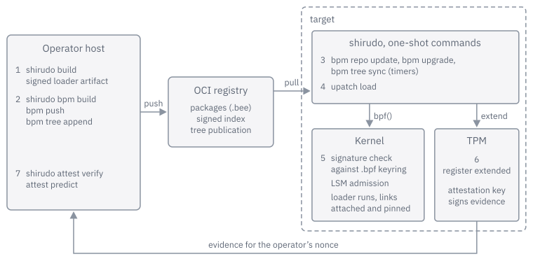

shirudo (Japanese シールド, pronounced “shee-roo-doh”) means “shield”.
shirudo is a BPF-based security platform: Linux targets run only the BPF their operator signed, every change is measured into the TPM, and functionality ships as signed upatches (“micropatches”) that targets pull from OCI registries.
Read the documentation Quickstart
Use cases
Users, developers and agents write upatches on top of shirudo, and shirudo makes sure that only signed upatches run and that every change is on record.
- Live patching for kernel and userspace. Security mitigations that block vulnerable code paths. They complement traditional kernel live patching with a faster rollout and bridge kernel and userspace deployment cycles.
- System hardening. Sandboxes for containers, Kubernetes Pods and LLM agents, and kernel hardening implemented as upatches.
- Runtime security and observability. For kernel and userspace applications, LLM agents included. Data is collected and aggregated in BPF maps and pushed over OpenTelemetry into collectors.
- Embedded and edge devices. Devices that are hard to patch get upatches the same way servers do. shirudo runs on x86-64, arm64 and riscv64 and adds little to the trusted computing base beyond the kernel.
How it works
